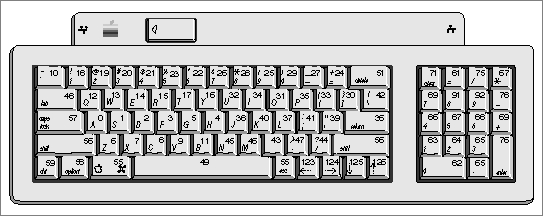
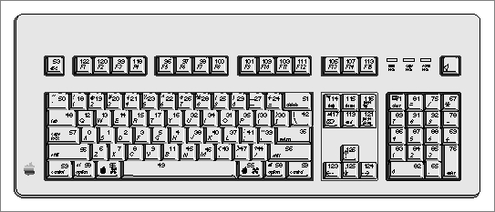

About Keyboards
The Macintosh computer supports over 12 separate physical types of keyboards. Your application needs to be able to handle text input from the domestic and ISO layouts of all Apple keyboards. It also needs to be able to distinguish multiple keyboards and to use the modifier flag that detects the state of the modifier keys (Shift, Caps Lock, Command, Option, and Control) on keyboards.Table C-1 lists the keyboard types. These type values are used in some of the keyboard resources discussed later in this appendix.
Figure C-1 and Figure C-2 show the U.S. layout of the Apple Keyboard II and Apple Extended Keyboard II and the virtual key codes produced by each key. The codes are the values that result after the raw key codes produced by the hardware have been mapped through the key-map resource. See "Key Translation" on page C-8. Other keyboards can produce different virtual key codes; some produce raw key codes only.
The Apple Extended Keyboard may be connected to the Apple Desktop Bus (ADB) of any computer in the Macintosh II or Macintosh SE family. It contains duplicated Shift, Option, and Control keys to the right of the Space bar. Other keyboards have different physical layouts.
Figure C-1 Apple Keyboard II (domestic layout)

Figure C-2 Apple Extended Keyboard II (domestic layout)
Table C-2 shows the keyboard modifier bits in the high byte of themodifiersfield of an event record (defined by theEventRecorddata type). The byte consisting of these bits is used to control the selection of tables in the keyboard-layout resource. See "Keyboard-Layout Resource (Type 'KCHR')" beginning on page C-18.
Table C-2 The keyboard modifier bits in an event record Bit Key 7 (Right Control if used)[14] 6 (Right Option if used) [14] 5 (Right Shift if used) [14] 4 Control (Left Control if different from Right Control) 3 Option (Left Option if different from Right Option) 2 Caps Lock 1 Shift (Left Shift if different from Right Shift) 0 Command
[14] See "Reassigning Right-Hand Key Codes" beginning on page C-14.